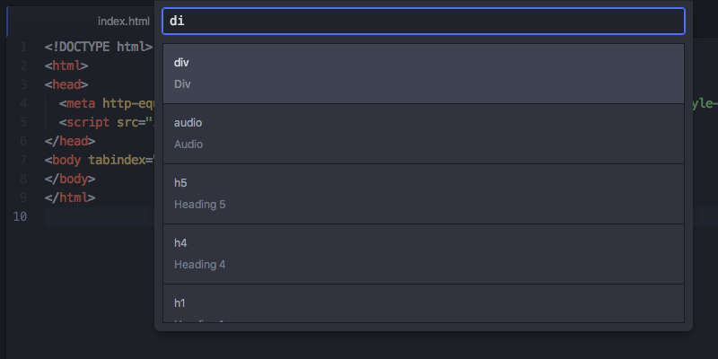

代码段
代码段是用来快速生成常用的代码语法的一个强大和快捷的方式。
其工作思路是，输入 habtm 这样的东西，按下回车键 Tab，就会扩展为 has_and_belongs_to_many。
许多包自带它们自己特定的代码段。比如，为 HTML 高亮和语法提供支持的 language-html 包，提供了许多代码段，来创建可能想要的各种 HTML 标签。如果你在 Atom 中创建一个新的 HTML 文件，可以输入html 然后按下 Tab，它会扩展为：
<html>
<head>
<title></title>
</head>
<body>
</body>
</html>
同时它会把光标定位在 title 标签的中间，以便你可以立即开始填充这个标签。许多代码段具有多个焦点位置，通过按下 Tab 在他们之间切换 —— 比如，在上例 HTML 代码段之中，当填充完标题标签之后，可以按下 Tab 键，然后光标就会移动到 body 标签之间。
要查看当前打开文件拥有的所有可用代码段，你可以按下 Alt+Shift+S。

图 1. 查看当前文件可用代码段
在选择输入框中输入内容，可以使用模糊搜索过滤这个列表。选择列表中一个之后生成相应代码段，在光标（或多重光标）所在位置插入代码。
创建你自己的代码段
所以说这样太爽了。但是，如果想使用语言包中没有，或者编写代码中自定义的东西，又要怎么做呢？很幸运的是，你可以非常便利地添加自己的代码段。
~\.atom 目录下的 snippets.cson 文本文件，存放了所有自定义的代码段，它们会在 Atom 运行时加载。通过 File > Snippets 菜单，打开这个文件。
代码段的格式
现在让我们看一看如何编写代码段，基本的代码段格式如下所示：
'.source.js':
'console.log':
'prefix': 'log'
'body': 'console.log(${1:"crash"});$2'
最顶层的键是选择器，即指定加载代码段的范围。获知此择器是什么值最简单的方法，是访问你想要添加代码段的语言的语言包，并找到 Scope 字符串。
例如，想要添加在 Java 文件中工作的代码段，应该先在 Settings 视图中寻找 language-java 包，可以看到 Scope 是 source.java，因此代码段最顶层的键就应该是它前面加上一个点（就像 CSS 选择器那样）。

图 2. Java 文件中的 Scope
下一层的键是代码段的名字，用于在代码段菜单中，以一个更具可读性的方式来描述代码段。可以将代码段命名为任何想要的名字。
在每个代码段的名字下面， prefix 用于触发代码段，body 是代码段被触发后插入的主体 。
每个后面带有数字的 $ 是 Tab 的驻留位置。一旦代码段被触发，通过按下 Tab 键来遍历它们。具有相同数字的 Tab 停止位置将会创建多个光标。
上面的例子向 Javascript 文件添加了 log 代码段，它会被扩展为：
console.log("crash");
其中的 crash 字符串会在开始时被选中，再次按下 Tab 键之后，光标会移动到分号之后。
并不像 CSS 选择器，代码段的键每层只能重复一次。如果某一层有重复的键，只有最后的那个会被读到，详见配置 CSON。
多行代码段主体
可以使用 CoffeeScript 多行语法的 """ 来创建长模板。
'.source.js':
'if, else if, else':
'prefix': 'ieie'
'body': """
if (${1:true}) {
$2
} else if (${3:false}) {
$4
} else {
$5
}
"""
如你所料，存在一个可创建代码段的代码段。如果你打开一个代码段文件，输入 snip 之后按下 Tab，会将以下内容插入到文件中：
'.source.js':
'Snippet Name':
'prefix': 'hello'
'body': 'Hello World!'
这样就有了你自定义的代码段。只要保存了文件，Atom 就会重新加载它，你也就能立即使用它了。
代码段功能在 atom/snippets 包中实现。
更多代码段的例子请见 language-html 和 language-javascript 包。